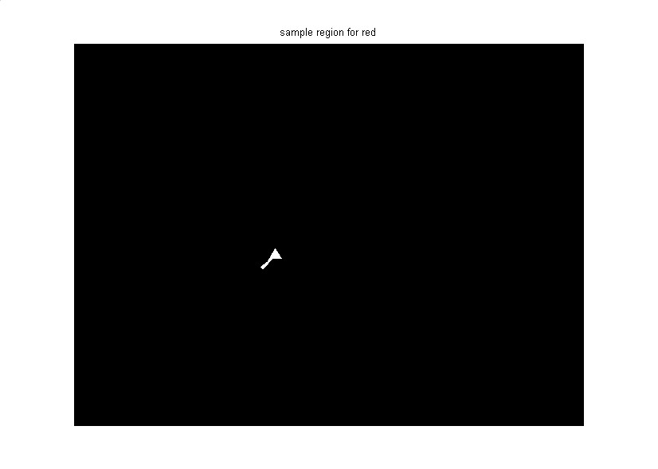

Color-based Segmentation of Fabric Using the L*a*b Color Space
The following demonstration acquires a single image frame of a piece of colorful fabric. The different colors in the fabric are identified using the L*a*b color space.
This demo requires the use of the Image Processing Toolbox.
Overview
% Create a video input object to access the image acquisition device. vid = videoinput('matrox', 1, 'M_NTSC'); % Capture one frame of data. fabric = getsnapshot(vid); figure(1) imshow(fabric) title('original image');
% Determine the image resolution.
imageRes = vid.VideoResolution;
imageWidth = imageRes(1);
imageHeight = imageRes(2);
% Once the video input object is no longer needed, delete
% it and clear it from the workspace.
delete(vid)
clear vid
Step 2: Calculate Sample Colors in L*a*b Color Space for Each Region
Count the number of major colors visible in the image. Notice how easily you can visually distinguish these colors from one another. The L*a*b color space (also known as CIELAB or CIE L*a*b) enables you to quantify these visual differences.
The L*a*b color space is derived from the CIE XYZ tristimulus values. The L*a*b space consists of a luminosity ('L') or brightness layer, chromaticity layer 'a' indicating where color falls along the red-green axis, and chromaticity layer 'b' indicating where the color falls along the blue-yellow axis.
Your approach is to choose a small sample region for each color and to calculate each sample region's average color in 'a*b' space. You will use these color markers to classify each pixel.
% Initialize storage for each sample region. colorNames = { 'red','green','purple','blue','yellow' }; nColors = length(colorNames); sample_regions = false([imageHeight imageWidth nColors]); % Select each sample region. f = figure; for count = 1:nColors set(f, 'name', ['Select sample region for ' colorNames{count}] ); sample_regions(:,:,count) = roipoly(fabric); end close(f); % Display a sample region. imshow(sample_regions(:,:,1)) title(['sample region for ' colorNames{1}]);
% Convert the fabric RGB image into an L*a*b image. cform = makecform('srgb2lab'); lab_fabric = applycform(fabric,cform);
% Calculate the mean 'a' and 'b' value for each area extracted. % These values serve as your color markers in 'a*b' space. a = lab_fabric(:,:,2); b = lab_fabric(:,:,3); color_markers = repmat(0, [nColors, 2]); for count = 1:nColors color_markers(count,1) = mean2(a(sample_regions(:,:,count))); color_markers(count,2) = mean2(b(sample_regions(:,:,count))); end
% For example, the average color of the second sample region in 'a*b' space is: disp( sprintf('[%0.3f,%0.3f]', color_markers(2,1), color_markers(2,2)) );
[105.956,147.867]
Step 3: Classify Each Pixel Using the Nearest Neighbor Rule
Each color marker now has an 'a' and a 'b' value. You can classify each pixel in the image by calculating the Euclidean distance between that pixel and each color marker. The smallest distance will tell you that the pixel most closely matches that color marker. For example, if the distance between a pixel and the second color marker is the smallest, then the pixel would be labeled as that color.
% Create an array that contains your color labels:
% 0 = background
% 1 = red
% 2 = green
% 3 = purple
% 4 = magenta
% 5 = yellow
color_labels = [0: nColors-1];
% Initialize matrices to be used in the nearest neighbor classification.
a = double(a);
b = double(b);
distance = repmat(0,[size(a), nColors]);
% Perform classification. for count = 1:nColors distance(:,:,count) = ( (a - color_markers(count,1)).^2 + ... (b - color_markers(count,2)).^2 ).^0.5; end [value, label] = min(distance, [], 3); label = color_labels(label); clear value distance;
Step 4: Display Results of Nearest Neighbor Classification
The label matrix contains a color label for each pixel in the fabric image. Use the label matrix to separate objects in the original fabric image by color.
rgb_label = repmat(label, [1 1 3]); segmented_images = repmat(uint8(0), [size(fabric), nColors]); for count = 1:nColors color = fabric; color(rgb_label ~= color_labels(count)) = 0; segmented_images(:,:,:,count) = color; end
imshow(segmented_images(:,:,:,1));
title([colorNames{1} ' objects'] );
imshow(segmented_images(:,:,:,2));
title([colorNames{2} ' objects'] );
imshow(segmented_images(:,:,:,3));
title([colorNames{3} ' objects'] );
imshow(segmented_images(:,:,:,4));
title([colorNames{4} ' objects'] );
imshow(segmented_images(:,:,:,5));
title([colorNames{5} ' objects'] );
Step 5: Display 'a' and 'b' Values of the Labeled Colors
You can see how well the nearest neighbor classification separated the different color populations by plotting the 'a' and 'b' values of pixels that were classified into separate colors. For display purposes, label each point with its color label.
purple = [119/255 73/255 152/255];
plot_labels = {'k', 'r', 'g', purple, 'b', 'y'};
figure
for count = 1:nColors
h(count) = plot(a(label==count-1),b(label==count-1),'.','MarkerEdgeColor', ...
plot_labels{count}, 'MarkerFaceColor', plot_labels{count});
hold on;
end
title('Scatterplot of the segmented pixels in ''a*b'' space');
xlabel('''a'' values');
ylabel('''b'' values');